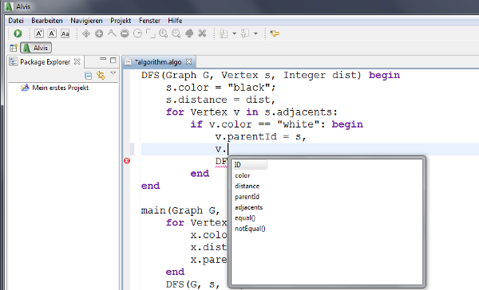
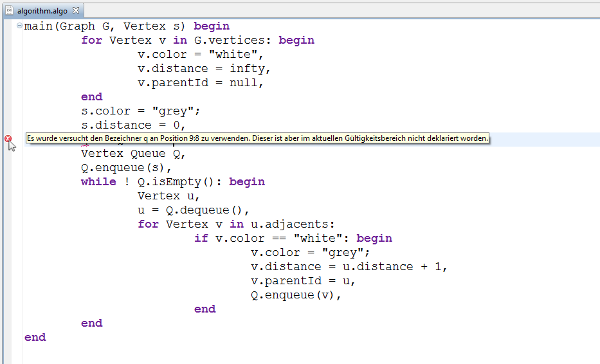
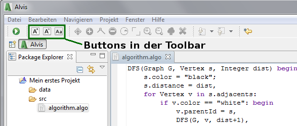
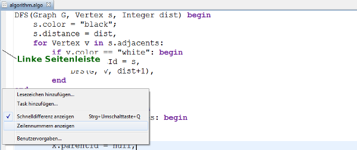

Der Algorithmus Editor
Algorithmen die in der Alvis' Sprache geschrieben werden, können im Algorithmus-Editor leichter erstellt werden.
Der Editor unterstützt den Nutzer bei der Erstellung der Algorithmen, indem er den Quelltext die Syntax hervorhebt,
bekannte Vervollständigungen anbietet und falschen Code markiert. Gewöhnliche Tastenkürzel wie zum Beispiel "Steuerung + C" für das kopieren von Text
sowie "Steuerung + v" für das einfügen von kopierten Text können im Editor genutzt werden.
Die Code-Vervollständigung
Code im Editor kann durch das drücken des Tastenkürzels "Steuerng+Leertaste" vervollständigt werden.
Es werden bereits definierte Variablen, bekannte Schlüsselwörter und die dem Compiler bekannten Typen vervollständigt.
Zudem können auch Methoden und Attribute von Typen vervollständigt werden.
Dabei werden Methoden mit "()" erweitert, damit man erkennen kann, dass es sich um eine Funktion handelt, die vervollständigt wird.

Anzeigen von Fehlern im Quelltext
Fehler im Quelltext werden bei einer Schreibpause von einer halben Sekunde erneuert und im Quelltext markiert.
Wenn man an den Rand der Zeile mit dem Fehler geht oder mit der Maus über die Fehlerstelle fährt, bekommt man weitere Hilfestellung zum Fehler.

Ändern Schriftgröße und -art
Die Schriftgröße und Schriftart lässt sich über die Buttons in der Toolbar ändern.
Diese werden nur angezeigt, wenn zurzeit ein Algorithmus Editor aktiv ist.

Erklärungen zu den Buttons:
| Symbol/Reiter |
Bedeutung |
|
Die Schriftgröße im Editor wird um jeweils 4 vergörßert. |
|
Die Schriftgröße im Editor wird um jeweils 4 verkleinert. |
|
Die Schriftart im Editor ändern. Hier kann die Schriftgröße nochmal preziser eingestellt werden. |
Zeilennummern
Zeilennummern lassen sich durch ein Rechtklick auf die linke Seitenleiste, bei "Zeilennummern anzeigen" ein- und ausblenden.
